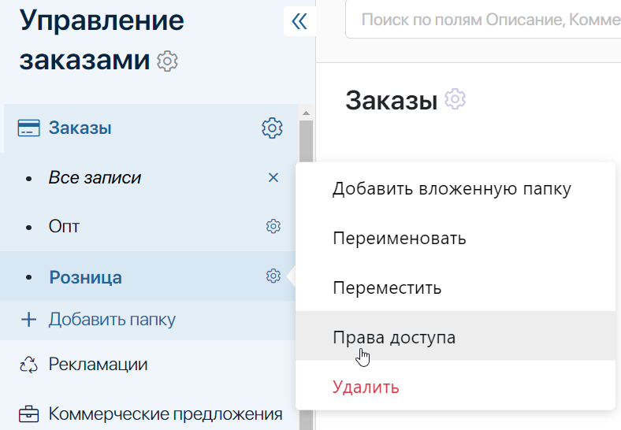
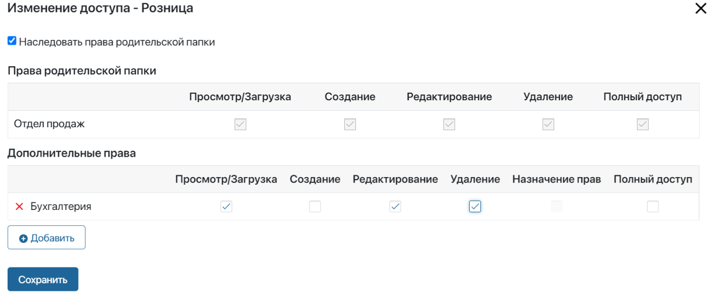
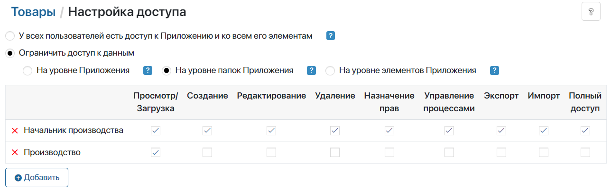
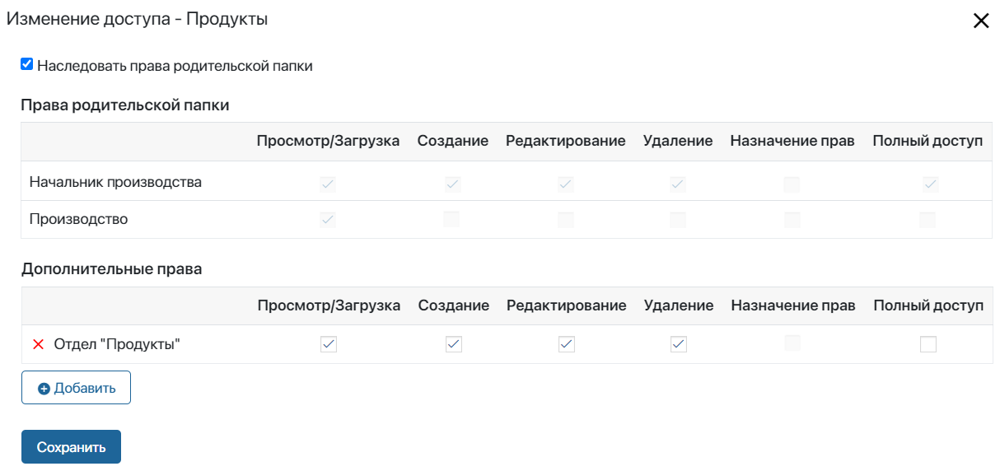
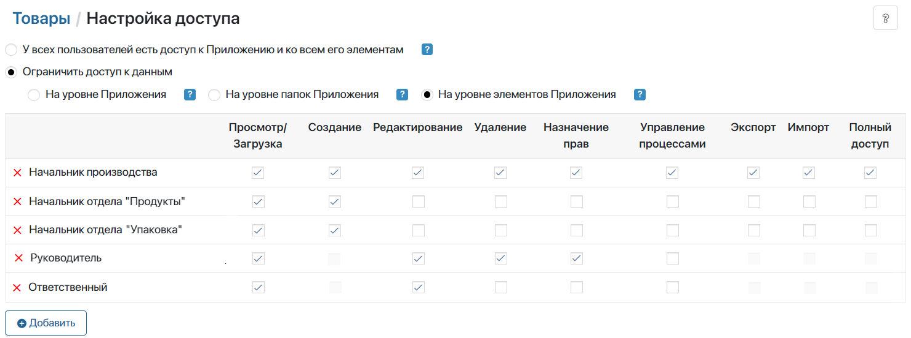

Если для приложения настроен иерархический справочник, вы можете назначать пользователям права для данных каждой папки приложения. Используйте этот вариант, когда разным сотрудникам нужен доступ к данным разных папок.
Например, в приложении Вакансии созданы две папки: для вакансий на руководящие должности и для вакансий на должности специалистов. С данными первой папки работает только начальник HR-отдела, а с данными второй папки — HR-менеджеры.
Начало внимание
Выдавать и ограничивать права к данным приложения на уровне папок могут только пользователи, входящие в группу Администраторы.
Конец внимание
Обратите внимание:
- Выбрав настройки ограничения доступа на уровне папок, вы можете:
- задать общие настройки доступа для всех папок приложения;
- настроить доступ для каждой папки в дереве:
- сохранить права пользователей с общим доступом и указать сотрудников с дополнительными правами на папку;
- отменить наследование общих прав и предоставить сотрудникам индивидуальный доступ к папке;
- Вы можете выбрать другой вариант настройки доступа:
- на уровне приложения — это самый мягкий вариант. Назначенные пользователям права применяются ко всем элементам приложения;
- на уровне элементов приложения — это самый строгий вариант разграничения доступа. Позволяет назначить разные права разным пользователям к отдельным элементам приложения.
- Для групп сотрудников, постоянно работающих с приложением, предоставьте верхнеуровневый доступ к разделу, в котором оно размещено, и доступ к самому приложению. Тогда к доступным данным приложения можно перейти через левое меню.
- Если сотрудник работает с элементами приложения разово, например, только в рамках бизнес-процесса, можно не предоставлять доступы к разделу и приложению. Тогда сотрудник с доступом к данным приложения перейдёт в карточку элемента по прямой ссылке, например, из процессной задачи.
Настроить общие права доступа к папкам приложения
Чтобы назначить права доступа для всех данных приложения на уровне его папок:
- Нажмите на значок шестерёнки справа от названия приложения и выберите Настройка доступа.
- Выберите опцию Ограничить доступ к данным > На уровне папок приложения.
- Нажмите кнопку +Добавить, чтобы выбрать объект для назначения прав доступа. Объектом может быть пользователь, группа пользователей, элемент организационной структуры, а также Автор — сотрудник, создавший элемент приложения.
- Укажите, какие типы прав будут доступны выбранным объектам.
- Настройте опции:
- Включить наследование прав с учетом подчинения в организационной структуре — по умолчанию руководители получают те же права доступа на приложение, что и их подчинённые. Чтобы ограничить доступ, отключите опцию;
- При ошибке доступа скрывать список пользователей, которые могут предоставить доступ — по умолчанию сотрудник без прав доступа при попытке открыть карточку элемента приложения увидит список пользователей с привилегией выдачи прав. Чтобы скрыть список, включите опцию.
- Нажмите Сохранить.
Обратите внимание, общие настройки будут применяться ко всем папкам приложения по умолчанию, но вы можете отменить наследование прав и настроить индивидуальный доступ к каждой папке.
Настроить доступ к элементам отдельной папки
Чтобы настроить права доступа к данным определённой папки:
- В левом меню рядом с фильтром Все записи нажмите на значок карандаша.
- Рядом с названием каждой папки появится значок шестерёнки. Нажмите на него и выберите пункт Права доступа.

- В открывшемся окне вы можете определить действие общих прав доступа, настроенных на уровне приложения, в отношении определённой папки:
- оставить доступ к папке сотрудникам с общими правами и настроить дополнительные права для текущей папки.
Например, общий доступ ко всем папкам в приложении предоставлен сотрудникам отдела продаж. Его необходимо сохранить, а также настроить для определённой папки в дереве дополнительный доступ группе бухгалтеров.
Для этого:
- оставьте опцию Наследовать права родительской папки включённой;
- в блоке Дополнительные права добавьте пользователя, группу пользователей или элемент оргструктуры. Укажите, какие типы прав будут доступны выбранным объектам;

- отменить действие общих прав на уровне приложения и настроить индивидуальный доступ к определённой папке.
В этом случае только выбранные сотрудники смогут работать с элементами папки. Остальные пользователи с общими правами не увидят папку в иерархическом справочнике.
Для этого отключите опцию Наследовать права родительской папки. Появится сообщение Вы хотите добавить права родительской папки в виде явных разрешений?
- Да — общие права доступа отобразятся в блоке Дополнительные права, вы можете их изменить или дополнить;
- Нет — в блоке Дополнительные права выберите пользователя, группу пользователей или элемент оргструктуры и настройте индивидуальные права с нуля.
- Нажмите Сохранить.
Пример ограничения доступа на уровне папок приложения смотрите в статье «Комбинации настроек доступа».
Доступ к данным вложенных папок
К элементам вложенных папок по умолчанию применяется доступ, настроенный на уровне папок верхнего уровня. Так, если в приложении Договоры у вас есть папки Закупки > Производство > Комплектующие, к данным папки Комплектующие применятся права, настроенные для элементов папок Закупки и Производство. Ознакомьтесь подробнее с тем, как отключить наследование и настроить индивидуальный доступ для каждой папки.
Начало примечание
Примечание
Рассмотрим случай, когда доступ к данным приложения сначала был настроен на уровне папок, но затем вы ограничили доступ на уровне элементов. Тогда права, выданные на уровне отдельной папки, по-прежнему отобразятся в её настройках. Эти права:
- не будут учитываться для доступа к элементам;
- позволят только видеть папку в левом меню приложения.



|
Конец примечание